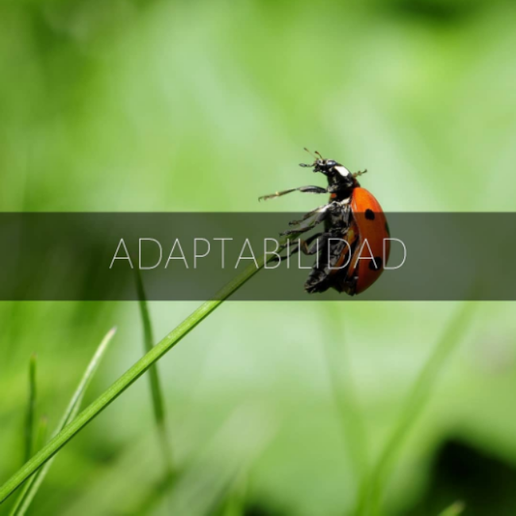
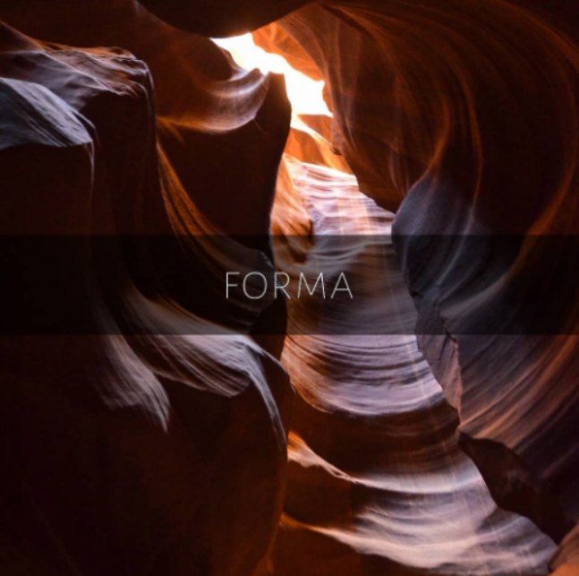
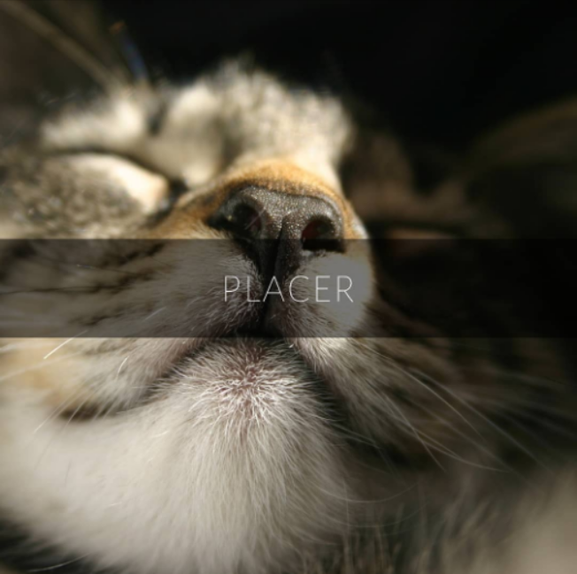
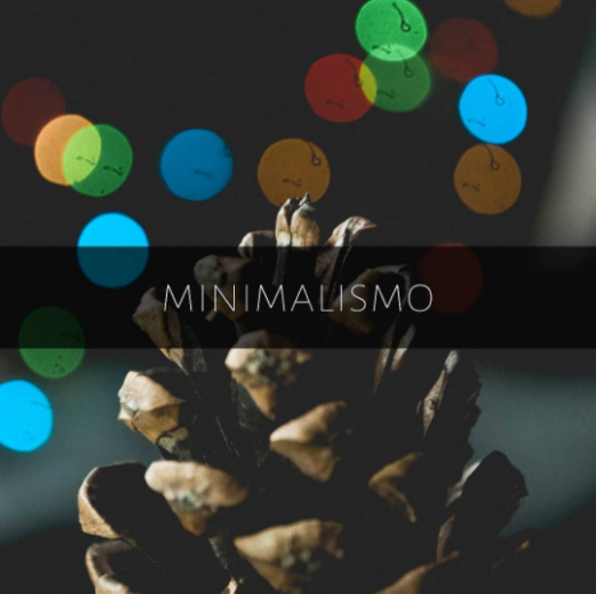

Todo lo que hacemos necesita una preparación. En especial si requiere un uso tan consciente del cuerpo como lo es cantar.
Antes de la producción de sonido (fonación) existen múltiples estadíos a los que está bueno ponerle el ojo también: Cómo está el cuerpo? Cómo está mi postura? Cómo está circulando el aire? Cómo está mi boca, mi laringe y todo lo anterior cuando voy a producir ese sonido?
Necesitamos observar, usar el tiempo como herramienta para organizarnos y no para desestabilizarnos.
Estar un paso adelante de aquello que vamos a hacer y que no nos sorprenda sobre la marcha.
Es mejor preparar una sola vez a conciencia que intentar mil veces y repetir apelando a corregir sobre la marcha como modus operandi básico. Lo que suceda después sí, tiene que ser flexible de ser modificado.
Y de eso habla la palabra que sigue:
La preparación inicial (ver post anterior) es un impulso que, idealmente, queremos mantener. Pero ¿qué pasa si nos distrajimos? O nos olvidamos de una respiración? O no logramos seguir en la recta línea de lo seguro y funcional? La respuesta suele ser simple: Improvisar, adaptarse.
Pero... cómo volver a ese cauce?
Hay algo tan importante como tener una preparación previa y es no apegarse a lo pautado.
Pensemos en un equilibrista en la cuerda floja. Si empieza su caminata centrado no necesita adaptarse a nada. Pero si por algún motivo ladeó a un costado tendrá que compensar para el otro en una medida tal que no genere más desequilibrio (y cada vez más, como un efecto dominó).
Para eso es esencial no enfocarnos en lo que falló más que como un nuevo piso donde construir algo distinto.
Esto, llevado al canto puede significar, por ejemplo, de una toma deficiente de aire encontrar inflexiones expresivas nuevas. O de una toma de aire más potente de lo esperado poder unir frases o usar ese impulso para hacer saltos melódicos y dinámicos que enriquezcan el fraseo.
También los moldes vocales (próximo post) nos pueden aportar tímbricas diversas que se pueden adaptar entre sí.
Cantar es como componer en el aire y en el tiempo.
🌐 A veces cantar es como la alfarería: estamos continuamente moldeando dentro de nuestro cuerpo. En lo más concreto como el tracto vocal, o más abstractamente hacia otras sensaciones sutiles, incluso hasta las mismas ideas musicales forman parte de nuestro impulso por darle forma.
De ahí la necesidad de que todas las formas que utilicemos se relacionen en todos sus niveles.
O sea: supongamos que musicalmente quiero expresar algo profundo, ancestral, grande o lejano. Esa es la forma más abstracta a la que quiero llegar como artilugio expresivo.
Yendo a lo corporal mi forma va a tomar esas características, voy a expandir mi piel, mis brazos y manos abarcarán el espacio como si mi tamaño se duplicara, y finalmente mi boca, mi lengua, mi paladar y mi faringe se modificarán generando esta sensación de "grandeza". También el aire se manejará con esta lógica, haciendo respiraciones amplias, que recorran todo el cuerpo, sin mezquinar nada, sin dejar una sola puerta cerrada.
🏹Consigna: si la forma musical que quisieras abordar fuera: brillante, plana, directa.
¿Cómo usarías tu cuerpo?
- Por qué cantás?
- Porque me gusta
- Entonces por qué no lo estás disfrutando?
Ahí está la cuestión. ¿Qué puede ser tan importante como para sacarnos del disfrute de algo que hacemos exclusivamente por placer?
No creo que haya una sola respuesta. Pero creo que sea cual sea tiene mucho que ver con las EXPECTATIVAS que ponemos sobre lo que escuchamos. Y si nos fijamos bien así como nuestra voz muta a lo largo del aprendizaje, también lo hacen nuestras expectativas. No hay metas estáticas. Pero si estamos pensando constantemente en las metas se nos va de las manos lo que está sucediendo.
Abocarse por completo al placer de lo presente tiene mucho que ver con meditar.
El placer es la sensación física de lo que sucede, y si es algo no deseado el placer es aprender a decodificarlo, extraer de él algo útil. También, si estamos cansadxs, el placer es hacernos masajes cordales, ejercicios de respiración o, simplemente, callar por unos momentos.
¿Qué es lo que más placer te da cuando cantás? Compartilo aquí abajo 🤗
Sí, lo sé, muchas veces nos gana la ansiedad... Y queremos hacer todo de una vez, y lograr todo a la vez, entonces tomamos grandes porciones de música de un tirón para estar aunque sea con la tranquilidad de haberlo hecho del principio al final.
Pero, ¿y todos los huequitos que dejamos en el medio sin resolver?
Muchas veces en las clases hablo de hacer "zoom" en determinados momentos, un zoom que incluso puede hacer que veamos todo "pixelado" es decir: sin identidad.
Lo desarmamos, lo simplificamos. Lo reducimos a las notas más significativas, le sacamos las consonantes, lo hacemos mucho más lento, lo transportamos, etc.
Básicamente lo desmembramos, lo investigamos... Y luego, de a poquito, lo volvemos a armar.
Con paciencia, intentando no caer en el automatismo de lo que hacíamos al cantar esta frase o palabra sino incorporando su nueva construcción, con la tranquilidad de que fuimos nosotrxs quienes la erigieron.
🌃
Podés enviarme un whatsapp, mail o seguirme en redes sociales en los siguientes links: